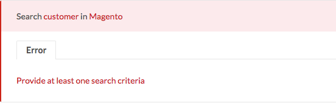
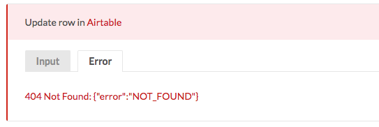
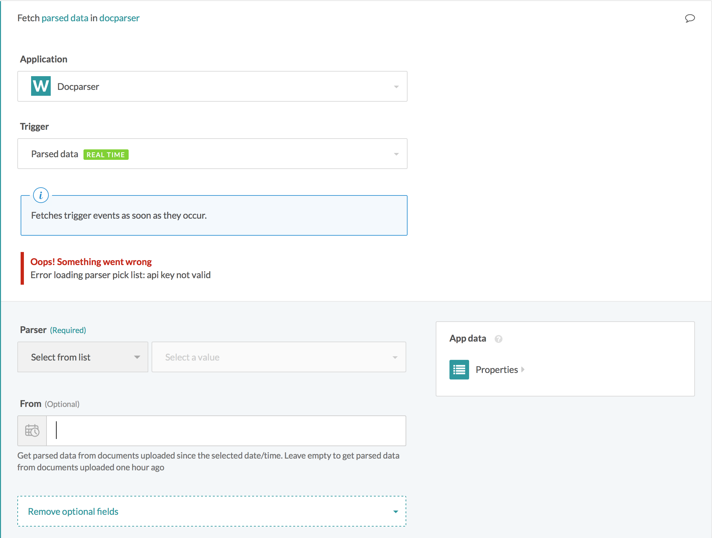
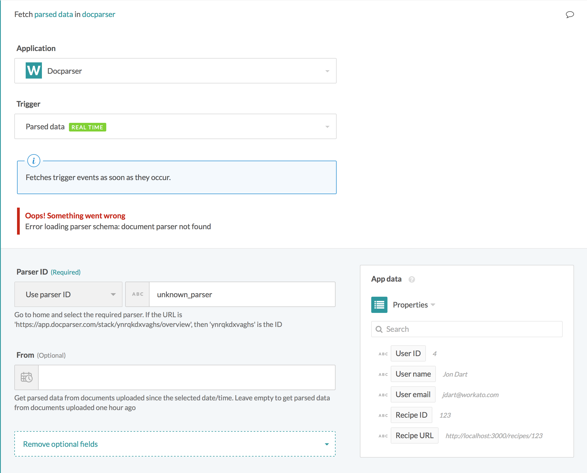

Error Handling
Exposing detailed and helpful error message can improve your recipe building experience. However, default SDK actions and triggers do not expose response message or body in an instance of HTTP errors. Additionally, you may want to expose error messages in other instances (such as when action/trigger input data does not meet certain business requirements). This can be achieved using the following helper methods.
error
This is a Workato SDK specific method to raise a job error with a custom message.
error("Some error message")
This can be used in a number of ways to improve usability for your custom connector.
Input validation
You can raise custom errors for inputs that violate some business logic. Let's use an example of a search action that tries to search for a Contact using a search action. You want to make sure that the user is searching for records with at least one search criteria. In this case, you will want to raise an error if there are no input values, instead of sending a request with no query parameters.
execute: lambda do |connection, input|
error("Provide at least one search criteria") if input.blank?
get("", input)
end
 Input validation error message
Response validation
Some APIs do not use response codes to indicate an error with a request. These APIs may respond with 200 HTTP code and error messages in the response body. Sage Intacct is a good example.
When there are Sage Intacct business logic errors with a HTTP request, the response from Intacct Web Service will also be a 200 response code with an <errormessage> XML tag in the response body.
For example, this is a sample response body from Sage Intacct web services that contains a business logic error.
<response>
...
<operation>
...
<result>
<status>failure</status>
<function>apply_arpayment</function>
<controlid>testControlId</controlid>
<errormessage>
<error>
<errorno>XL03000027</errorno>
<description/>
<description2>The amount paid if greater than the amount due for invoice with key 8229</description2>
<correction/>
</error>
</errormessage>
</result>
</operation>
</response>
The XML will be transformed into a hash equivalent:
{
"response"=>[
{
"operation"=>[
{
"result"=>[
{
"status"=>[{"content!"=>"failure"}],
"function"=>[{"content!"=>"read"}],
"controlid"=>[{"content!"=>"testControlId"}],
"errormessage"=>[
{
"error"=>[
{
"errorno"=>[
{
"content!"=>"DL02000001"
}
],
"description"=>[{}],
"description2"=>[
{
"content!"=>"There was an error processing the request."
}
],
"correction"=>[{}]
}
]
}
]
}
]
}
]
}
]
}
If this XML-to-hash conversion is unfamiliar to you, refer to the documentation on XML format for more information.
By default, the SDK framework will only raise errors when the HTTP response code indicates an error. Hence, it is important to validate all responses and raise an error if one is present in the response body.
There are 2 ways you can catch these errors. The first method is to use detect_on in the connection definition. This is a connector-wide method to catch errors; It applies to all actions and triggers. Furthermore, this method will raise errors with a standard message format that cannot be customized.
The alternative is to handle these errors in the after_response method. This method can be used together with error() to validate the contents of a HTTP response and raise custom errors. This method applies to individual actions/triggers. Hence the condition(s) used to detect an error can be customized to each request. Additionally, the error message can be changed to suit each actions/triggers.
Going back to our example of a business logic error in Sage Intacct, we can use the after_response method to check the contents of the response body before deciding to return the body as a successful request output or to raise an error with a custom message.
post("https://api.intacct.com/ia/xml/xmlgw.phtml", payload).
format_xml("request").
after_response do |code, body, headers|
result = body.dig("response", 0, "operation", 0, "result", 0)
if result.dig("status", 0, "content!") == "failure"
error(result.dig("errormessage", 0))
else
result["data"]
end
end
after_error_response
after_error_response is a helper method that can be chained to a HTTP verb method to handle HTTP responses; In particular, when the API responses with an error response code.
This method accepts 2 arguments. First, a number which represents the exact error code that you wish to handle.
Next, it also accepts a conditional block that will be executed when a HTTP response code matching the first argument is received.
Let's take a look at an after_error_response example, using Airtable API.
execute: lambda do |connection, input|
patch("https://api.airtable.com/v0/#{connection['base_id']}/users/#{id}", payload).
after_error_response(404) do |code, body, header, message|
error("#{message}: #{body}")
end
end
When you try to update a row with an invalid ID, a HTTP error will be returned. The Error code used is 404 with a JSON body {"error":"NOT_FOUND"}.
 Formatted error message in recipe job detail page
This block can also be chained to HTTP verb methods in other parts of your custom connector. For example, you may want to handling and provide custom error messages from dynamic pick_lists. In this example, we are looking at handling errors from Docparser.
pick_lists: {
parsers: lambda do
get('https://slack.com/api/users.list').
after_error_response(400) do |code, body, headers, message|
error("Error loading parser pick list: #{body[/(?<=error\"\:\").*(?=\"\})/]}")
end.
pluck("label", "id")
end
}
HTTP error will be displayed in the recipe editor when the custom adapter tries to load the pick list. In the example, the API key was reset, resulting in an invalid API keys used in the request.
 HTTP request error message in recipe editor
This can also be used in dynamic fields code block in object_definitions.
object_definitions: {
parsed_data: {
fields: ->(_, config_fields) {
get("https://api.docparser.com/v1/results/#{config_fields['parser_id']}1/schema").
after_error_response(400) do |code, body, headers, message|
error("Error loading parser schema: body[/(?<=error\"\:\").*(?=\"\})/]")
end
}
}
}
HTTP error will be displayed in the recipe editor when the custom adapter tries to fetch schema for an unknown parser.
 Schema error message in recipe editor